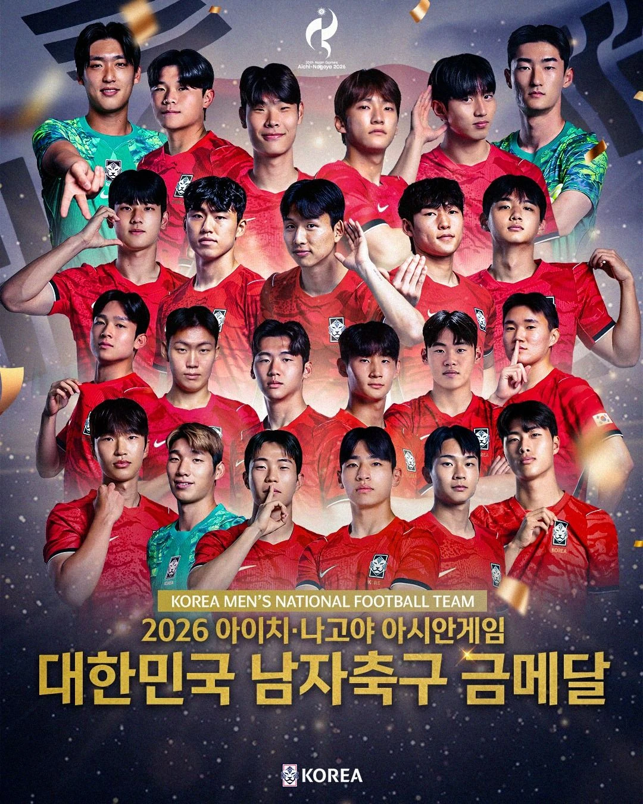
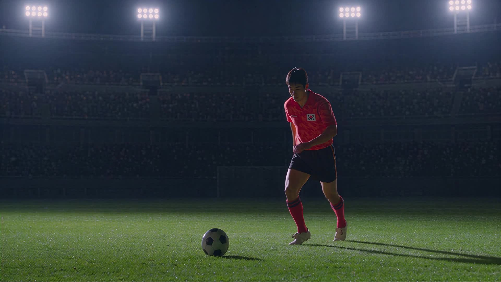

골이 터지기
직전의 패스.
슈팅 전에 누가 공을 연결했는지 되짚어봐. 한 번의 골이 여러 사람의 움직임으로 보이기 시작해.
#연결 #함께만든순간우리의 순간이 시작된다.
경기장에 입장하는 중

AICHI–NAGOYA 2026 / FOOTBALL
대회는 끝났지만, 빠져들 순간은 남아 있어.
놓쳤던 대한민국 축구, 지금부터 만나봐.
THE GAMES, AT A GLANCE
2026 아이치·나고야 아시안게임의 대한민국 축구를 소개하는 입문 가이드.
모든 규칙을 외우기보다, 마음이 움직이는 장면부터 찾아보자.
01 / WATCH IT YOUR WAY
하이라이트를 볼 때,
이 세 가지를 한 번 찾아봐.
슈팅 전에 누가 공을 연결했는지 되짚어봐. 한 번의 골이 여러 사람의 움직임으로 보이기 시작해.
#연결 #함께만든순간공을 가진 선수 옆에서 누가 빈 공간으로 달리는지 찾아봐. 수비가 움직이는 이유도 조금씩 보일 거야.
#공간 #눈여겨볼움직임점수만으로는 설명되지 않는 감정이 있어. 동료에게 달려가는 모습까지가 한 경기의 이야기야.
#표정 #우리팀02 / KNOW YOUR TEAM
대한축구협회가 발표한
남자 대표팀 명단에서 만나는 세 선수.
공을 받기 전 어디를 바라보는지, 다음 패스가 어디로 이어지는지 함께 따라가 봐.
공식 대표팀 명단 확인 +공격 장면 사이, 상대를 막는 위치와 동료를 돕는 움직임에도 주목해 봐.
공식 대표팀 명단 확인 +골문 앞에서 공을 기다리기까지, 어떤 공간을 찾아 움직이는지 살펴봐.
공식 대표팀 명단 확인 +이름·포지션 출처: 대한축구협회 최종 명단 발표. 관전 문구는 입문자를 위한 편집 가이드이며 개별 경기 활약에 대한 평가가 아닙니다.
03 / REPLAY THE MOMENT
처음부터 긴 경기를 볼 필요는 없어.
중계사의 하이라이트에서 시작해 봐.

SPOTV NOW 대회 특집에서 축구 하이라이트와 다시보기 콘텐츠를 찾아볼 수 있어.
중계사 하이라이트 찾아보기 +외부 사이트로 이동합니다. 영상별 로그인·이용 조건을 확인하세요.이미지는 실제 경기 기록이 아닌 AI 생성 캠페인 영상의 장면입니다.
04 / THE SUPPORTER'S NOTE
축구가 처음인 너를 위한 야랑이의 세 편.
한 편씩 읽다 보면, 응원할 이유가 생길 거야.
05 / A LITTLE HELP
이 가이드는 모든 규칙을 외우는 대신 패스·공간·선수의 표정에 주목하는 방식으로 시작해요. 관전 포인트를 읽고 짧은 하이라이트부터 만나보세요.
중계사의 대회 특집에서 하이라이트와 다시보기 콘텐츠를 찾아볼 수 있어요. 이 페이지는 대회 종료 후 콘텐츠 탐색을 돕는 가이드입니다.
오프닝은 사용자가 AI로 생성한 캠페인 영상이에요. 실제 참가 선수나 경기 기록이 아니며, 유니폼 디자인도 공식 착용복으로 검증한 자료가 아닙니다.
첫 방문에만 짧은 무음 오프닝이 자동으로 재생돼요. 같은 브라우저의 다음 방문부터는 본문으로 바로 이동해요. 자동 재생이 제한되거나 로딩 오류가 생겨도 본문을 바로 보여줍니다.
YOUR NEXT MOMENT STARTS HERE.
룰을 전부 몰라도 괜찮아. 한 장면부터, 우리 팀이 되면 돼.
야랑이와 축구 입문하기 +본 페이지는 수업 실습을 위해 제작한 학습용 기획물입니다.
공식 대회·협회·선수의 운영 페이지가 아닙니다.
자료 확인: 2026.10.22 · 오프닝 영상: AI 생성 캠페인 비주얼
메인 이미지: 사용자 제공 대한민국 남자축구대표팀 기념 포스터. 사용자가 이미지를 가져온 경로는 아래 나무위키 문서입니다. 원게시자와 사용 조건은 미확인입니다.